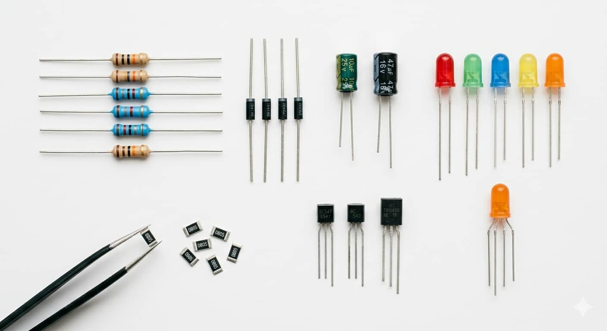
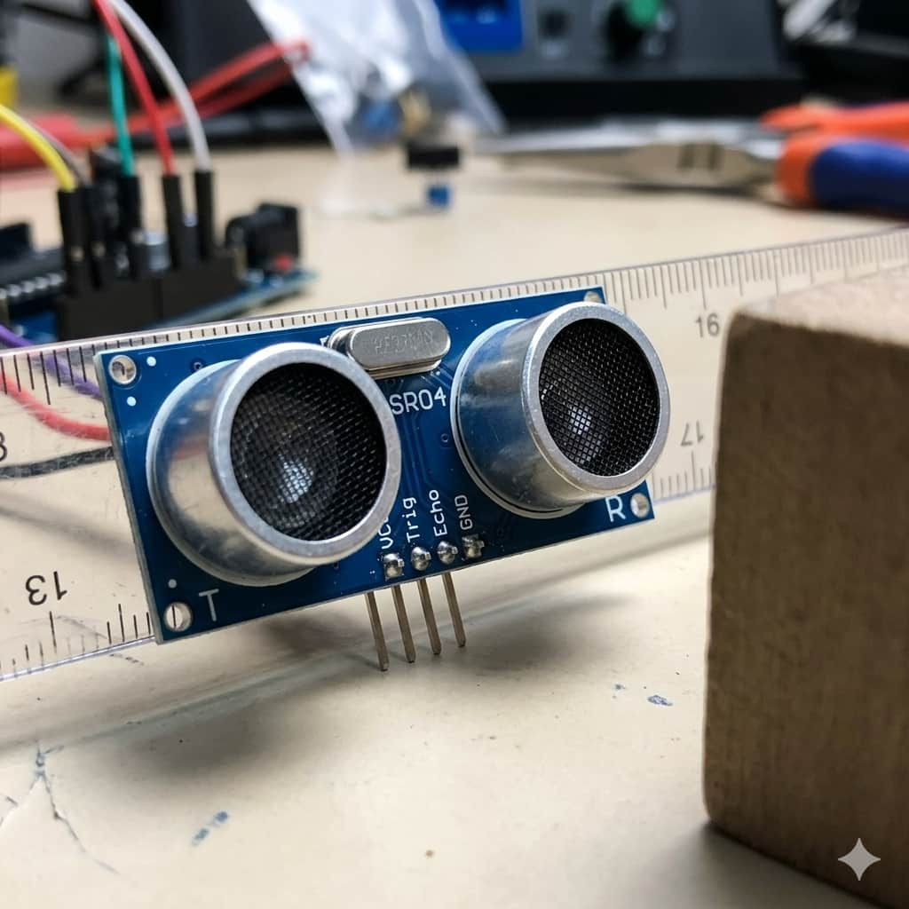
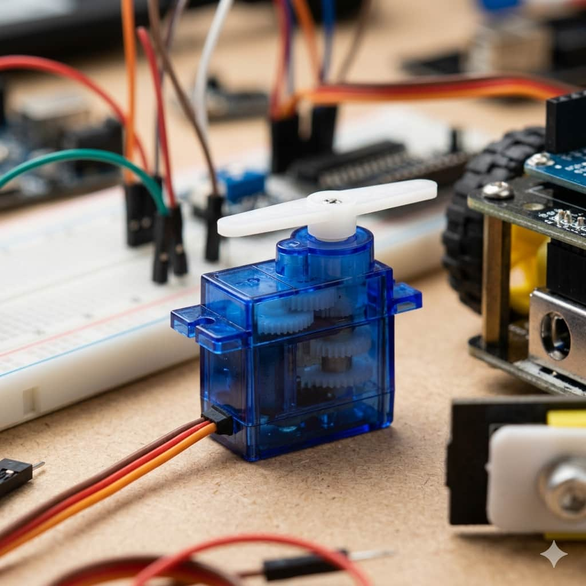

Componentes Electrónicos

Son los elementos básicos que forman un circuito. Incluyen resistencias, condensadores, diodos y transistores. Su función es controlar y manipular el paso de la corriente eléctrica para proteger y alimentar los dispositivos.
Sensores

Actúan como los sentidos del robot. Permiten medir magnitudes físicas como distancia, temperatura, luz o presión y convertirlas en señales eléctricas que el procesador pueda entender.
Actuadores

Son los encargados de generar movimiento o efectos físicos. Transforman la energía eléctrica en energía mecánica, lumínica o sonora. Ejemplos comunes son los motores, servomotores, luces LED y zumbadores.